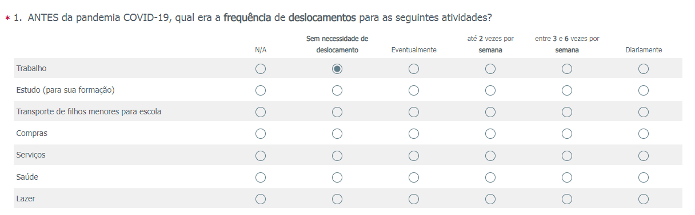
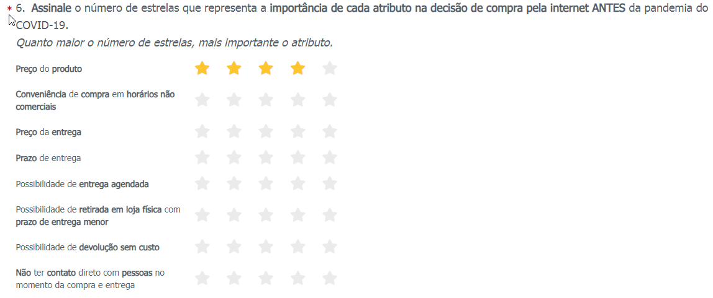
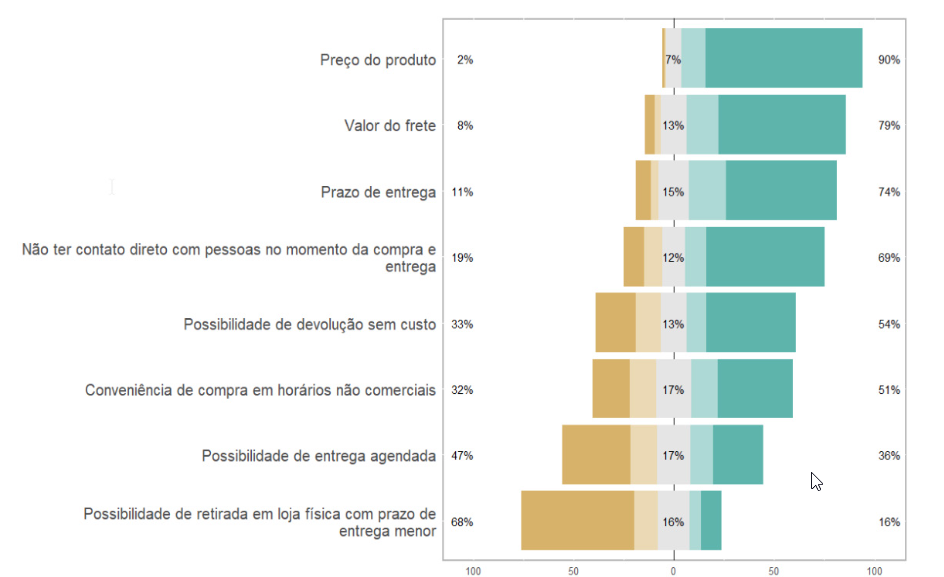
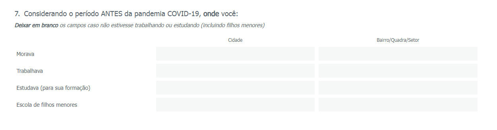
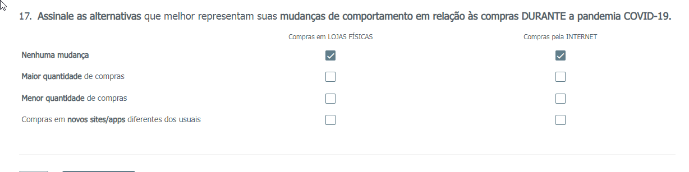
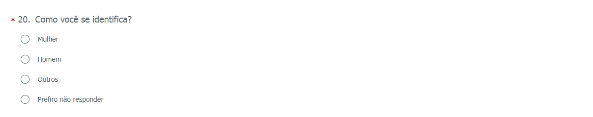
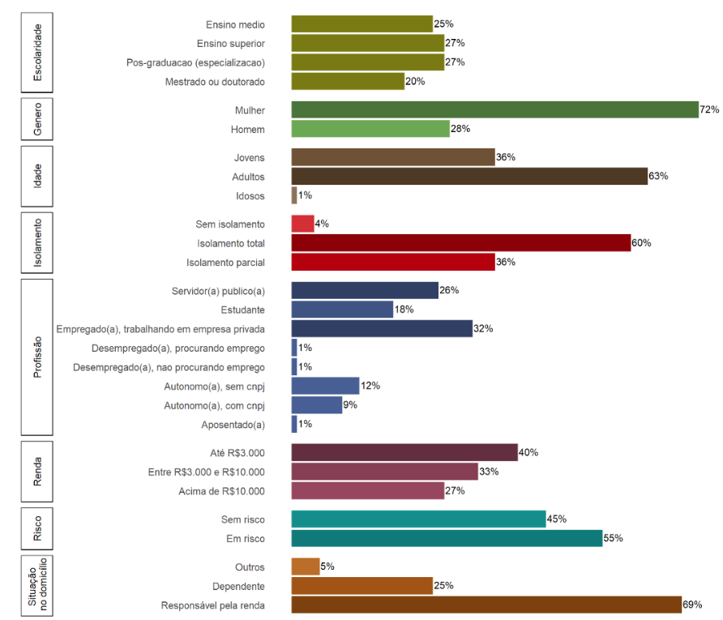

Elementos textuais
Introdução
Apresentação do tema
- QUAL o grande tema do seu trabalho? (duas páginas)
Pergunta-problema
- O QUE você quer responder com este trabalho? (meia página)
Justificativa/relevância
- POR QUE este trabalho é importante? (uma página)
Objetivos geral e específico
- O QUE você vai fazer para responder a pergunta-problema? QUAIS são as contribuições intermediárias do seu trabalho?(uma página)
Revisão da literatura
O referencial teórico é um texto estruturado, apresentando o que já foi publicado até o momento com relação ao seu tema de pesquisa, mas principalmente como a teoria entende os conceitos que você irá investigar para responder seu problema de pesquisa.
- apresentar os principais conceitos presentes no seu
problema de pesquisa discuti-losseguindo umalógica de argumentação- Para isso, o referencial teórico será escrito com base em uma
revisão de literatura. - Foque nos conceitos e não nas publicações!!!!!!!!!!!!!
Por que fazer?
- Arcabouço teórico
- Fundamentação conceitual
- Direcionamento - construção do método
O que devo incluir? Como encontrar as referências?
Seleção de artigos
Revistas de alto impacto- JCR
- Qualis
- Citescore
- Google Scholar
- Web of science - app mobile
- Elsevier
- Scopus
- JCR
Perecibilidade da publicação- Pesquisa
- Snowballing
O que devo incluir? Como encontrar as referências?
Defina um tempo para pesquisa de artigos !!!!!!!!!!!!!!!!!!
Você nunca vai conseguir encontrar TODAS as publicações que existem sobre o tema!
Como construir a revisão?
Organização dos artigos
Elaboração de notas atômicas
Citações
- Plugin Word - Zotero
- Plugin Chrome - Zotero
Revisão textual
Faça um cronograma de leitura!!!!!!!!!!!!!!!!!!!!!!!!!!!
ESCREVA, ESCREVA, ESCREVA, mesmo que depois o texto produzido não fique no TCC!
SEMPRE inclua a fonte pesquisada no momento da leitura/redação. Se deixar para depois, o trabalho será muito maior!
Quais os tipos de revisão da literatura?
- Revisão narrativa ou bibliográfica
- Revisão sistemática
- Bibliométrica
- Meta-análise
Atividade extra
- Faça seu cadastro nas plataformas
Zotero,Research RabbiteScispace - A partir da sua pergunta problema, escolha palavras-chave e pesquise essas palavras no Scispace e escolha dois artigos com maior número de citações e publicado em revistas de impacto.
- Entre na sua conta no
Research Rabbit, crie uma coleção e adicione os DOI desses artigos para pesquisa. - Identifique os autores e as publicações mais relevantes nesse assunto.
Métodos e dados
Dados primários e dados secundários
Dados primários
Dados inéditos coletados diretamente pelos pesquisadores
Dados secundários
Dados públicos e já existentes, coletados por terceiros. Podem ser estruturados ou não estruturados.
Dados primários e dados secundários
Dados primários
- Grupos focais
- Entrevistas
- Monitoramento de mídias sociais
- Questionários
- Gravações de audio
- Gravações de video - Observação - Ensaios em laboratório
Dados secundários
- Sites de empresas
- Estatísticas públicas
- Parcerias com instituições
- Relatórios publicizados
- Artigos com disponibilização de dados primários
- Web scrapping
Dados primários e dados secundários
Dados primários
- Organizados
- Controle da quantidade e da qualidade
- Certezas sobre a qualidade das fontes
- Consume mais tempo
- Custo mais elevado
- Sujeito participante
Dados secundários
- Agilidade
- Baixo custo
- Ajuda a refinar a pergunta de pesquisa
- Dados podem estar antigos
- Pode haver viés que não será identificado ou resolvido na base de dados
- Incertezas sobre a confiabilidade e validade das fontes
Questionários - Vantagens e desvantagens
Vantagens
- Permite obter uma grande quantidade de dados em pouco tempo;
- Pode atingir um grande número de pessoas simultaneamente;
- Respostas obtidas de forma rápida e precisa;
- Em razão do anonimato, os respondentes se sentem mais à vontade;
- Facilita a padronização e comparação dos dados;
- Menos risco de distorção.
Desvantagens
- Falta de pessoalidade;
- Os respondentes podem ser desonestos ou responder sem que a resposta realmente reflita a intenção de comportamento;
- A leitura de todas as perguntas, antes de responder, pode influenciar nas respostas; - Impossibilidade de generalização
Questionários - Dicas
- Revise o problema de pesquisa
- Conheça os tipos de questões
- Determine cada pergunta pensando nas variáveis que serão investigadas conforme teoria
- Inclua dados socioeconômicos e demográficos
- Inclua o TCLE
- Procure equilibrar o detalhamento com o tempo a ser gasto por cada respondente
- Use uma ferramenta digital
- Faça um teste piloto
- Revise o conteúdo do questionário
Questionários - Tipos de perguntas
Única escolha

Questionários - Tipos de perguntas
Likert

Questionário - Escala Likert

Questionários - Tipos de perguntas
Aberta

Questionários - Tipos de perguntas
Múltipla escolha

Questionários - Recursos
- Logical jump
- Classes ou valores(aberta)
- Timestamp
- Gênero

Questionários - Caracterização e segmentação da amostra

Métodos de análise
- Estatística descritiva, multivariada, espacial e não espacial
- Econometria espacial e não espacial - A Econometria consiste em uma série de ferramentas estatísticas que visam obter relações relevantes entre variáveis a partir de modelos
- Análise de conteúdo
- Análise espacial
- outros….
Atividade extra - Abordagem quantitativa
- Elabore um questionário que esteja alinhado com sua pergunta de pesquisa. Elabore-o por meio do Google Forms.
- Inclua perguntas de atributos socioeconômicos e demográficos.
- Mande no grupo do workshop para que os colegas respondam e mandem um feedback.